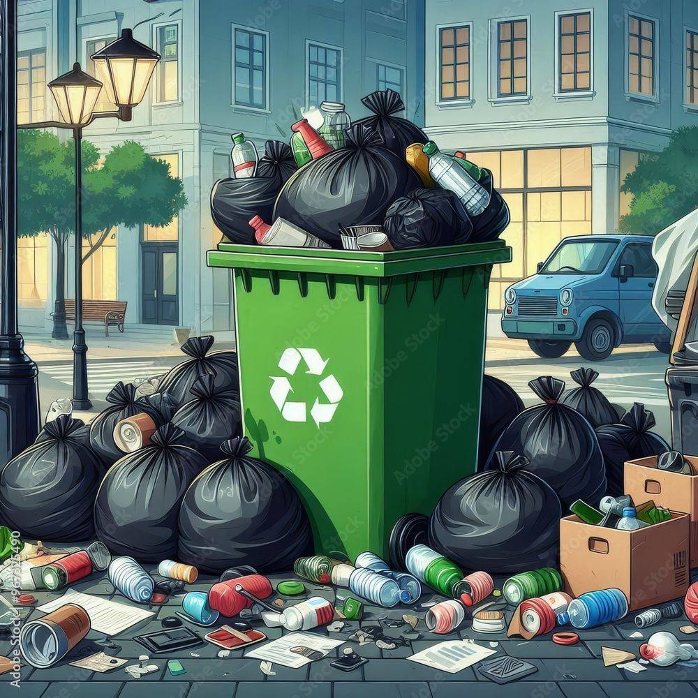
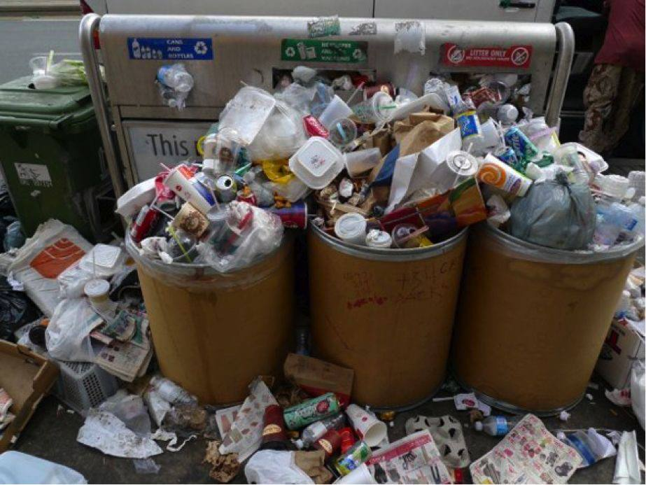
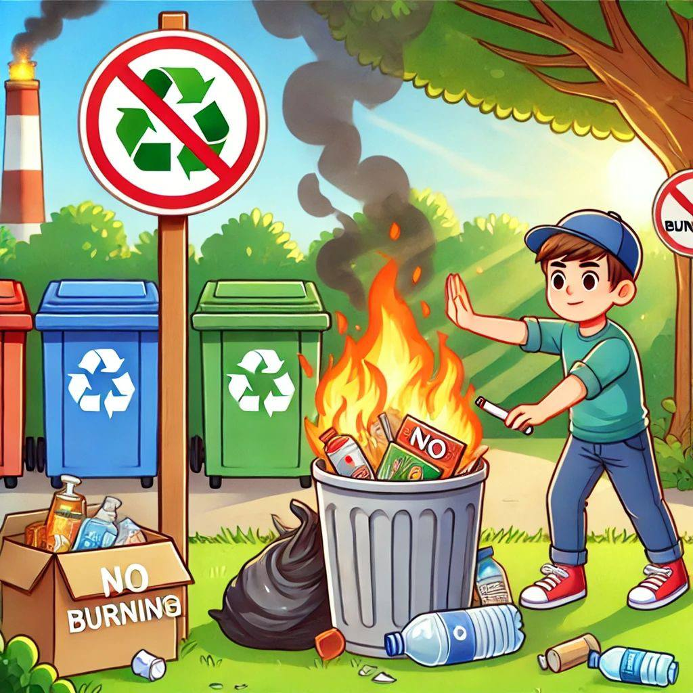
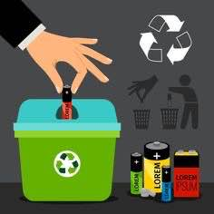
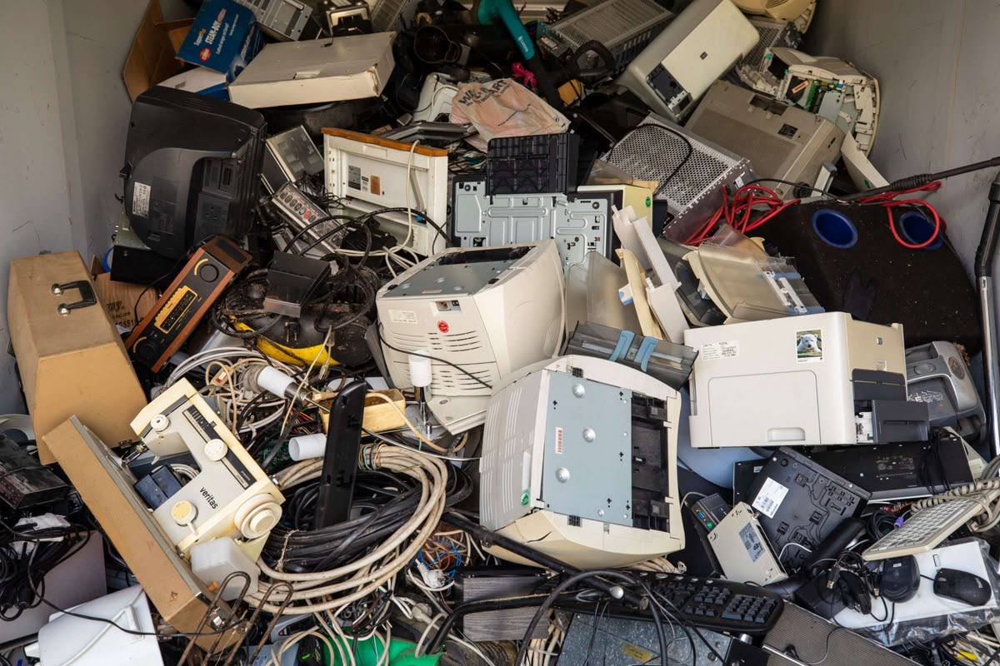

Every action we take affects the environment in some way. When we recycle, we help reduce waste, save natural resources, and lower pollution. Even small actions like separating waste or using recycling bins can make a big difference when everyone does Recycling also helps protect animals, keeps our surroundings clean, and reduces the amount of garbage in landfills. It shows us that our daily choices matter and can create positive change for the planet. In conclusion, understanding the impact of our actions helps us become more responsible and encourages us to protect the environment for the future.
Many people throw away paper, plastic bottles, glass jars, aluminum cans, and cardboard without realizing that these materials can be collected, processed, and turned into new products. When recyclable items are mixed with ordinary household waste, they are often transported directly to landfills or incinerators instead of being sorted and reused. This means that valuable materials are permanently lost after only one use, even though they still have significant economic and environmental value. As more recyclable materials are discarded, communities must spend more money managing larger volumes of waste, and industries must continue extracting raw materials from nature to replace what was thrown away.

Landfills fill up more quickly and release methane, a powerful greenhouse gas that contributes to global warming. More trees are cut down to make paper, more oil is extracted to produce plastic, and more metals are mined to manufacture cans and electronics. These activities destroy habitats, increase pollution, and consume large amounts of energy and water, placing greater pressure on the Earth's natural systems.
Recycling programs depend on people sorting their waste into the correct categories, such as paper, plastic, glass, metal, organic waste, and electronic waste. When food scraps, liquids, or non-recyclable materials are placed in recycling bins, they contaminate the recyclable items around them. For example, a greasy pizza box or half-full drink bottle can ruin an entire batch of otherwise recyclable materials. Workers at recycling facilities may then be forced to discard the contaminated materials, even if most of the items were originally recyclable.

Contaminated recycling reduces the efficiency of recycling centers and increases waste management costs. More materials are sent to landfills, more resources are extracted to replace wasted materials, and communities lose an important opportunity to conserve energy and reduce pollution.
Single-use products such as plastic bags, straws, disposable cups, food containers, and wrappers are designed to be used once and then thrown away. Although they are convenient, they create a huge amount of waste because they are often used for only a few minutes but remain in the environment for decades or even centuries. Many people use these items every day without considering the long-term environmental consequences.

Plastic waste accumulates in rivers, oceans, and soil, where it harms wildlife and breaks down into tiny microplastics. Animals may mistake plastic for food or become entangled in it, leading to injury or death. Over time, plastic pollution damages ecosystems and threatens both environmental and human health.
In some communities, waste is burned as a quick way to reduce the amount of rubbish. However, burning plastics, rubber, and other synthetic materials releases harmful chemicals and greenhouse gases into the atmosphere. This practice destroys materials that could otherwise be recycled and reused, and it often occurs without proper pollution controls.

Toxic smoke pollutes the air and can cause breathing problems, asthma, and other health issues. Greenhouse gases such as carbon dioxide contribute to climate change, while pollutants can damage plants, animals, and nearby ecosystems.
Electronic devices such as phones, batteries, chargers, tablets, and computers contain valuable metals as well as hazardous substances like lead, mercury, and cadmium. When these items are thrown into regular trash bins, they may break apart in landfills and release toxic chemicals into the surrounding environment. At the same time, useful materials that could be recovered and reused are wasted.

Toxic substances contaminate soil and water, harming wildlife and potentially entering the human food chain. Valuable metals such as copper, gold, and aluminum are lost, increasing the need for mining and causing additional environmental destruction.